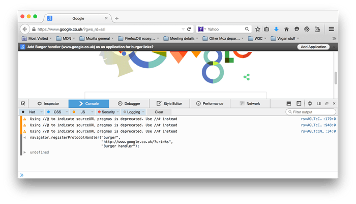

It’s fairly common to find web pages link to resources using non-http protocols. An example is the mailto: protocol:
Web authors can use a mailto: link when they want to provide a convenient way for users to send an email, directly from the webpage. When the link is activated, the browser should launch the default desktop application for handling email. You can think of this as a desktop-based protocol handler.
Web-based protocol handlers allow web-based applications to participate in the process too. This is becoming more important as more types of applications migrate to the web. In fact, there are many web-based email handling applications that could process a mailto link.
Setting up a web application as a protocol handler is not a difficult process. Basically, the web application uses registerProtocolHandler() to register itself with the browser as a potential handler for a given protocol. For example:
navigator.registerProtocolHandler("web+burger",
"http://www.google.co.uk/?uri=%s",
"Burger handler");Where the parameters are:
href of the link and a GET is executed on the resultant URL.When a browser executes this code, it should display a prompt to the user, asking permission to allow the web application to register as a handler for the protocol. Firefox displays a prompt in the notification bar area:

Note: The URL template supplied when registering must be of the same domain as the webpage attempting to perform the registration or the registration will fail. For example,
http://example.com/homepage.htmlcan register a protocol handler forhttp://example.com/handle_mailto/%s, but not forhttp://example.org/handle_mailto/%s.
Registering the same protocol handler more than once will pop up a different notification, indicating that the protocol handler is already registered. Therefore, it is a good idea to guard your call to register the protocol handler with a check to see if it is already registered, such as in the example below.
<!DOCTYPE HTML PUBLIC "-//W3C//DTD HTML 4.01//EN">
<html lang="en">
<head>
<title>Web Protocol Handler Sample - Register</title>
<script type="text/javascript">
navigator.registerProtocolHandler("web+burger",
"http://www.google.co.uk/?uri=%s",
"Burger handler");
</script>
</head>
<body>
<h1>Web Protocol Handler Sample</h1>
<p>This web page will install a web protocol handler for the <code>web+burger:</code> protocol.</p>
</body>
</html>Now, anytime the user activates a link that uses the registered protocol, the browser will route the action to the URL supplied when the web application registered. Firefox will, by default, prompt the user before handling off the action.
<!DOCTYPE HTML PUBLIC "-//W3C//DTD HTML 4.01//EN">
<html lang="en">
<head>
<title>Web Protocol Handler Sample - Test</title>
</head>
<body>
<p>Hey have you seen <a href="web+burger:cheeseburger">this</a> before?</p>
</body>
</html>The next phase is handling the action. The browser extracts the href from the activated link, combines it with the URL template supplied during handler registration and performs an HTTP GET on the URL. So, using the above examples, the browser would perform a GET on this URL:
http://www.google.co.uk/?uri=web+burger:cheeseburgerServer side code can extract the query string parameters and perform the desired action.
Note: The server side code is passed the entire contents of the
href. This means the server side code will have to parse out the protocol from the data.
<?php
$value = "";
if ( isset ( $_GET["value"] ) ) {
$value = $_GET["value"];
}
?>
<!DOCTYPE HTML PUBLIC "-//W3C//DTD HTML 4.01//EN">
<html lang="en">
<head>
<title>Web Protocol Handler Sample</title>
</head>
<body>
<h1>Web Protocol Handler Sample - Handler</h1>
<p>This web page is called when handling a <code>web+burger:</code> protocol action. The data sent:</p>
<textarea>
<?php echo(htmlspecialchars($value, ENT_QUOTES, 'UTF-8')); ?>
</textarea>
</body>
</html>